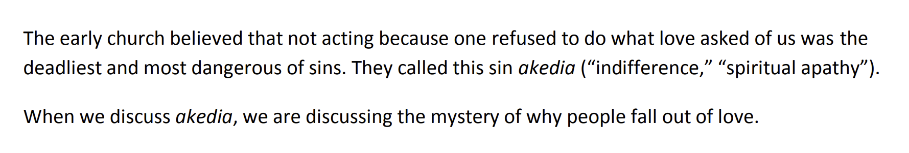

i.e. Cool stuff on the internet I want to keep
Gustav Klimt and Egon Schiele’s Twisted Fates in Paint; The Kiss (Klimt)
Sometimes I think Ive already seen the most beautiful things there are to see. then I see something new. Like this painting. Warm embrace. Clutching. You see this embrace everywhere. Clawing. Schiele's rendition—or bastardization—is brilliant too. It's so carnal and violent and rough and terrible. It's great!!!!
The Sin of Sloth or the Illness of the Demons? The Demon of Acedia in Early Christian Monasticism; Falling Out of Love: Akedia (acedia) and spiritual apathy
Cool article I'm reading about acedia, an emotion that's like, listlesness, general apathy. Seems almost similar to how depression affects other people: gaining a disinterest in most things. The other link seems to be a sort of module about akedia from a lecture by an academic. I got it from his site, didymus.org. Very interesting!
From the lecture module, ive learned that Inaction in itself is an action. The whole thing is written in the context of spirituality of course, but it's easily applied to other relationships. It mostly talks about neglecting one's relationship with God. Akedia not only leads to us neglecting ourselves, but those around us too. Relationships don't jsut deteriorate when you do something bad to another, it's just as bad when you do nothing to nurture the relationship.

This reminds me a lot of my relationship with my mom. I love her, but I don't like going out with her, because I have become apathetic and careless towards taking care of our relationship. She invites me out to eat, to shop, to get our nails done. I know she is trying to connect because she so often sees me sad. I cry, I don't move from my desk, I stay at home all day. I know she doesn't ask me why because she's the type to wait for you to be ready to share your feelings with her. But I will never share any of them, because I don't even know what I am feeling. I just know I am empty, and I have little interest in most things. It's so hard to care. I love you, Mom.
Wölfli's Irren-Anstalt Band-Hain, 1910
Outsider art is so awesome. It's pure and I think it's the truest art. Its untainted by that sort of preconceived notion of what art should be that lingers in any person's brain when they create something. Of course somebody can say I made this for myself, I don't care what society thinks, but I feel like even that type of thought is formed by influence of others. You can't do this kind of art anymore, not unless you're alone and unaware and ignorant and hidden from everything like Wölfli was.
His pieces are so beautiful, so intricate, so cathartic!!!!Another thing I found out while reading the page is horror vacui, which is what you call it when all spaces of a piece of art is all covered in shit.
this is awesome!
One of the sweetest sci fi "stories" ever! Features space probes!! :)
So many cool buttons and transcript and coolest of all: the entire recordings of the chosen apollo flight! It's awesome to hear the astronauts talk to each other because it makes the whole thing feel that much realer. IDK. It's 2am. It's just a lot different reading some second hand information about it than hearing the scientists themselves at work. :)